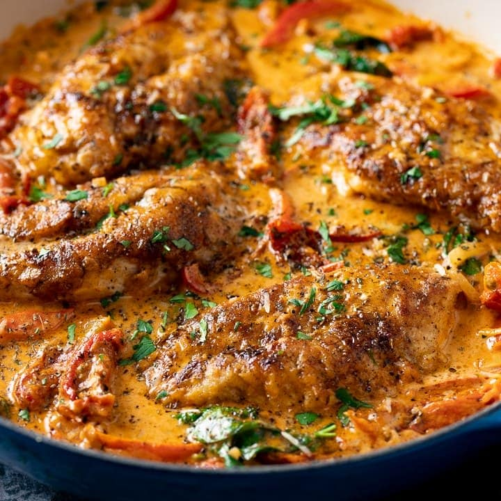

Back
Creamy Tuscan Chicken Recipe
By Alvin Zhou
Total time: 55mins

Picture yourself on the coast of Tuscany, Italy. Flowy clothes, a beautiful breeze, and a view of
the Tuscan Sea: you're ready to book your next vacation, aren't you? Well, we're here to bring
Tuscany to you. How, you may ask? Well, that's what our easy Tuscan chicken is here for.
Loaded with fresh veggies, herbs, and rich Parmesan cheese, it'll have you saying 'That's
amore!'
Ingriedients
(Makes 4 servings)
- 4 bone-in, skin-on chicken thighs
- 2 teaspoons salt, for the chicken
- 1 teaspoon pepper, for the chicken
- 1 tablespoon oil
- 3 cloves garlic, chopped
- 1/2 onion, diced
- 1 tomato, diced
- 2 cups spinach (80 g)
- 2 cups heavy cream (480 mL)
- 1 teaspoon salt
- 1 teaspoon pepper
- 1/2 cup grated parmesan cheese (55 g)
- 2 tablespoons fresh flat-leaf parsley,
chopped
Instructions
- Season the chicken all over with salt and pepper.
- Heat the oil in a skillet over medium-low heat.
- Place the chicken thighs skin side down in the skillet and cook for about 13
minutes to crisp up the skin. Move the chicken around from time to time to
ensure it cooks evenly. The skin should be hard to the touch.
- Flip the chicken, then cook for about another 15 minutes, until the chicken is
cooked through. Remove from pan.
- Add the garlic and onion, stirring until onions are translucent. Stir in the
tomatoes and spinach until the spinach is wilted.
- Add the heavy cream, salt, and pepper, bringing to a boil.
- Add the Parmesan cheese and parsley, stirring until the sauce has thickened
slightly.
- Place the chicken back in the pan, spooning the sauce on top of the chicken.
- Enjoy!
Nutrition Info (per serving)
- 714g Calories
- 64g Fat
- 9g Carbs
- 1g Fiber
- 6g Sugar
- 40g Protein
Back